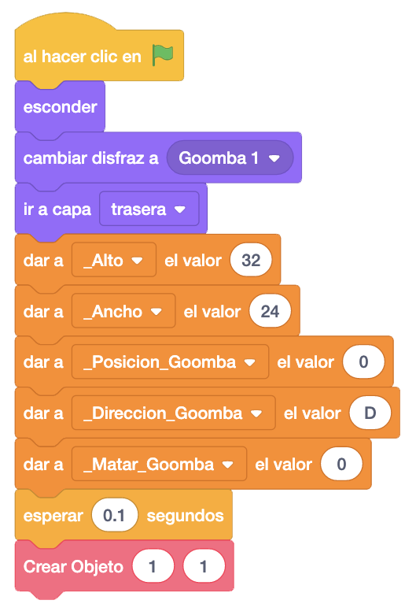

Uno de los últimos objetos que vamos a añadir es el Goomba. Copiamos como en el suelo toda la programación de
la plataforma.
Crearemos una serie de variables para el control del movimiento y demás de Goomba. Crearemos
"_Posición_Goomba" que nos indicará el número de posiciones que movemos a Goomba, "_Dirección_Goomba", que nos
indicará su dirección, y "_Matar_Goomba" que nos indicará cuando lo tenemos que matar.
En el bloque "Al Hacer Clic En La Bandera" le damos los valores de alto y ancho, inicializamos estas variables
que hemos creado y creamos al Goomba debajo de la primera plataforma.

En cuanto al bloque de "Al Comenzar Como Clon", añadimos donde ponemos a "1" la variable
"Toco Objetoo Por Encima", hacer una llamada a un nuevo bloque que llamaremos "MatarGoomba".
También añadiremos que donde ponemos a "1" la variable "Toco Objeto Por Derecha" y "Toco Objeto Por Izquierda",
llamar al mensaje "Quitar Vidas", que programaremos más adelante.
Al final del bloque haremos que Goomba se mueva de un lado para el otro, actualizando la variable
"_Dirección_Goomba" con la dirección que queremos que se mueva dependiendo del número de posiciones que
queremos que se mueva, que controlaremos con "_Posicion_Goomba".
A continuación crearemos un nuevo bloque "Al Comenzar Como Clon" donde haremos la gestión de los disfraces de Goomba para que parezca que se mueve. Esto solo lo haremos si no está muerto Goomba.
Finalmente, crearemos el bloque "MatarGoomba" donde haremos que Goomba desaparezca cuando se le pisa por
encima.
Lo primero será cambiar el disfraz al de Goomba aplastado, marcamos la variable "_Matar_Goomba" con "1" para
indicar que nos lo hemos aplastado y eliminaremos el clon.
También incluiremos que Mario haga un pequeño salto al aplastar a Goomba, dándole a la variable "Toco Objeto
Por Encima" el valor "0" para simular que no toca ningún objeto por encima y poder saltar, y asignándole el
valor "8" a "Velociodad Caida" para que salte un poco.
El juego iría quedando así.
Podemos ver el juego terminado con el Goomba pulsando aquí.